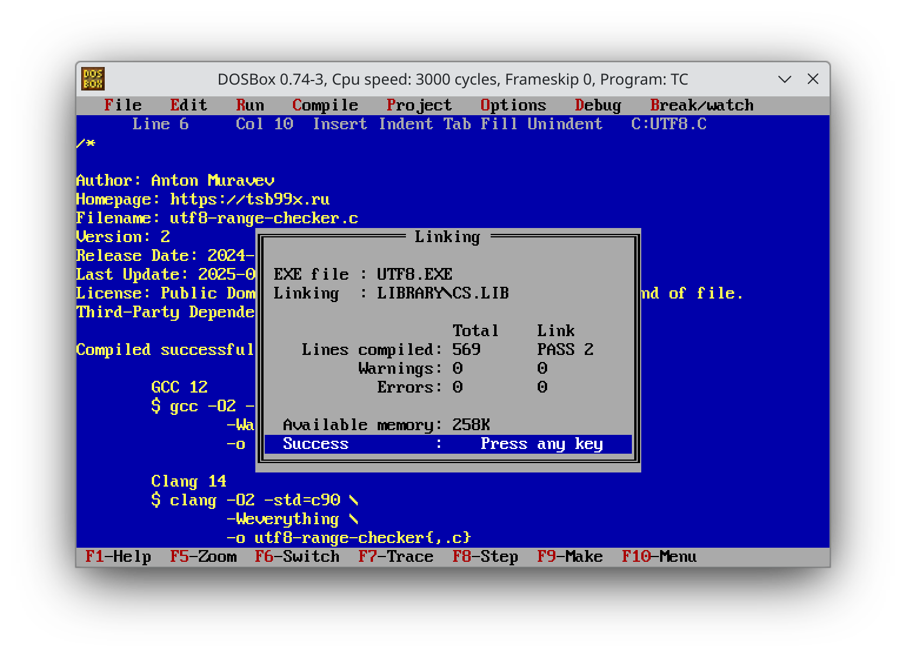

Работа над ошибками
Настоящая разработка это не только про то, чтобы написать программу. Программу ещё нужно поддерживать. Только поддержка покажет, насколько код удобен в работе.
Хороший тон поддержки – не сломать старые функции, а только улучшить софт. Немного решил поработать над парой своих “игрушечных” проектов на Си. Обе программы предельно просты, но имеют несколько недостатков.
Первым делом, включил в работу ClangFormat. Инструмент не самый простой, но позволяет добиться унифицированного форматирования. Меня особо заинтересовала возможность автоматического оборачивания в скобки кода в if и else. История показывает, что это источник некоторых очевидных ошибок, включая баг Apple.
Кроме этого, подключил компиляцию с помощью Clang и MSVC 2010. Польза Clang – он предоставляет замечательный флаг -Weverything. Не все предупреждения будут ошибками, но дают повод задуматься. Мне очень не хватает такого флага для GCC.
С MSVC 2010 иная ситуация. Я хотел получить универсальный код. Windows оказался хорошим тестом. Особенно Windows XP, где MSVC 2010 – последний релиз MSVC. Да, мало кто будет сейчас его использовать. Но, если проект компилируется и там, то скомпилируется практически везде. Tiny C Compiler в этих целях тоже подходит.
По тулчейну понятно, теперь к деталям.
Начнём с Access Log Tabulator. Проблемы, которые я решал – поиск альтернативы для нестандартной функции strptime и что делать с оффсетами в struct tm.
Предельно наивная имплементация strptime для формата даты-времени Apache не вызвала проблем. Достаточно использовать стандартный sscanf.
А вот пример структуры tm в заголовочных файлах у Clang и GCC на моём Debian:
struct tm
{
int tm_sec; /* Seconds. [0-60] (1 leap second) */
int tm_min; /* Minutes. [0-59] */
int tm_hour; /* Hours. [0-23] */
int tm_mday; /* Day. [1-31] */
int tm_mon; /* Month. [0-11] */
int tm_year; /* Year - 1900. */
int tm_wday; /* Day of week. [0-6] */
int tm_yday; /* Days in year.[0-365] */
int tm_isdst; /* DST. [-1/0/1]*/
# ifdef __USE_MISC
long int tm_gmtoff; /* Seconds east of UTC. */
const char *tm_zone; /* Timezone abbreviation. */
# else
long int __tm_gmtoff; /* Seconds east of UTC. */
const char *__tm_zone; /* Timezone abbreviation. */
# endif
};
Стандарт Си совсем не предусматривает использование оффсетов относительно GMT. То есть, поле tm_gmtoff – нестандартное расширение и на MSVC его нет. Оффсет пришлось вынести за пределы структуры tm отдельной переменной, но не беда.
Результат – полностью совместимая с C89/C90 версия программы.
Обновил и UTF8 Range Checker. Самая большая боль там – размерность переменной для Unicode codepoint. Такая переменная должна иметь как минимум 32 битный беззнаковый тип. Я же использовал unsigned int. Теоретически это проблема.
Да-да, я знаю, это неправильно. Стандарт Си гарантирует размерность int не менее 16 бит. То есть, для некоторых платформ невозможно будет получить корректный codepoint, ведь размерность будет меньше 32. Программа выдаст мусор.

Ради интереса, постарался найти такую платформу и компилятор. Из тех пар, что пробовал, только i16gcc на FreeDOS 1.3 или Turbo C на DOSBox показали проблему с битностью. У них int занимает 16 бит, а не 32.
Не беда, меняем unsigned int на unsigned long и дело в шляпе!
Что же, опробовал вторые версии программ на DOS, мои тесты проходят. Прекрасно!
P.S.: переносы строк постоянно приходилось менять при переходе из Unix окружения в Win или DOS. В Vim есть опция для установки окончания строк, :set ff=dos или :set ff=unix. Очень удобно. Применил опцию, сохраняешь файл и готово.
Журнал изменений
11 февраля 2025 г.: добавил пример struct tm и скриншот Turbo Vision.
1 января 2026 г.: перенёс исходники на GitHub.